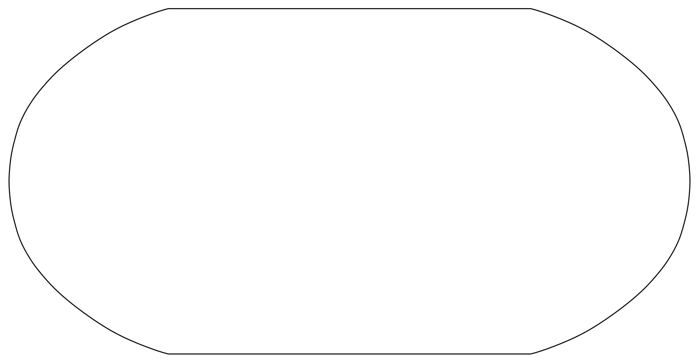
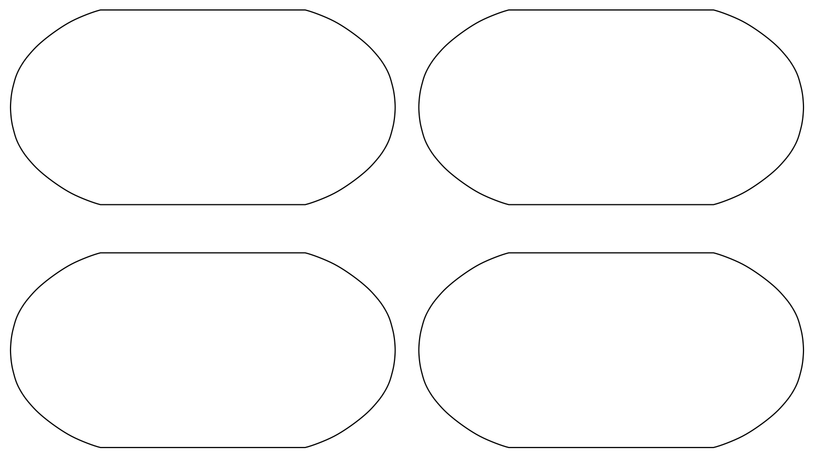

Tutorial 4: Understanding Climatology Through Precipitation Data#
Week 1, Day 3, Remote Sensing
Content creators: Douglas Rao
Content reviewers: Katrina Dobson, Younkap Nina Duplex, Maria Gonzalez, Will Gregory, Nahid Hasan, Paul Heubel, Sherry Mi, Beatriz Cosenza Muralles, Jenna Pearson, Agustina Pesce, Chi Zhang, Ohad Zivan
Content editors: Paul Heubel, Jenna Pearson, Chi Zhang, Ohad Zivan
Production editors: Wesley Banfield, Paul Heubel, Jenna Pearson, Konstantine Tsafatinos, Chi Zhang, Ohad Zivan
Our 2024 Sponsors: CMIP, NFDI4Earth
Tutorial Objectives#
Estimated timing of tutorial: 30 minutes
In this tutorial, you will explore the concept of a climatology, and learn how to leverage it using satellite precipitation data. You have already practiced how to calcuate a climatology using temperature data in the overview of the climate system day. That data spanned only 14 years, and typically you would want your data to span at least 30 years to calculate a climatology. Here you will use data spanning several decades to explore the seasonal cycle of precipitation at a specific location.
Upon completing this tutorial, you’ll be able to:
Comprehend the fundamentals of climatologies.
Compute a climatology utilizing long-term satellite precipitation data.
Create informative maps including features such as projections, coastlines, and other advanced plotting components.
Throughout this tutorial, you’ll employ NOAA’s monthly precipitation climate data records as the primary resource to demonstrate the process of calculating a long-term climatology for climate analysis. Specifically, you’ll use the Global Precipitation Climatology Project (GPCP) Monthly Precipitation Climate Data Record (CDR). As part of your investigation, you’ll focus on a specific location, observing its data across the entire time duration covered by the GPCP monthly dataset.
Setup#
# installations ( uncomment and run this cell ONLY when using google colab or kaggle )
# !pip install s3fs --quiet
# # properly install cartopy in colab to avoid session crash
# !apt-get install libproj-dev proj-data proj-bin --quiet
# !apt-get install libgeos-dev --quiet
# !pip install cython --quiet
# !pip install cartopy --quiet
# !apt-get -qq install python-cartopy python3-cartopy --quiet
# !pip uninstall -y shapely --quiet
# !pip install shapely --no-binary shapely --quiet
# !pip install boto3 --quiet
# you may need to restart the runtime after running this cell and that is ok
# imports
import s3fs
import xarray as xr
import matplotlib.pyplot as plt
import cartopy.crs as ccrs
import boto3
import botocore
import pooch
import os
import tempfile
Install and import feedback gadget#
Show code cell source
# @title Install and import feedback gadget
!pip3 install vibecheck datatops --quiet
from vibecheck import DatatopsContentReviewContainer
def content_review(notebook_section: str):
return DatatopsContentReviewContainer(
"", # No text prompt
notebook_section,
{
"url": "https://pmyvdlilci.execute-api.us-east-1.amazonaws.com/klab",
"name": "comptools_4clim",
"user_key": "l5jpxuee",
},
).render()
feedback_prefix = "W1D3_T4"
Figure Settings#
Show code cell source
# @title Figure Settings
import ipywidgets as widgets # interactive display
%config InlineBackend.figure_format = 'retina'
plt.style.use(
"https://raw.githubusercontent.com/neuromatch/climate-course-content/main/cma.mplstyle"
)
Helper functions#
Show code cell source
# @title Helper functions
def pooch_load(filelocation=None, filename=None, processor=None):
shared_location = "/home/jovyan/shared/data/tutorials/W1D3_RemoteSensing" # this is different for each day
user_temp_cache = tempfile.gettempdir()
#print(user_temp_cache)
# set pooch logger to print only warnings such that redundant downloading is avoided
pooch.get_logger().setLevel("WARNING")
if os.path.exists(os.path.join(shared_location, filename)):
file = os.path.join(shared_location, filename)
else:
file = pooch.retrieve(
filelocation,
known_hash=None,
fname=os.path.join(user_temp_cache, filename),
processor=processor,
)
return file
Video 1: Understanding Climatology#
Submit your feedback#
Show code cell source
# @title Submit your feedback
content_review(f"{feedback_prefix}_Understanding_Climatology_Video")
If you want to download the slides: https://osf.io/download/2ak68/
Submit your feedback#
Show code cell source
# @title Submit your feedback
content_review(f"{feedback_prefix}_Understanding_Climatology_Slides")
Section 1: Obtain Monthly Precipitation Data#
In this tutorial, the objective is to demonstrate how to calculate the long-term precipitation climatology using monthly precipitation climate data records from NOAA.
You’ll be utilizing the Global Precipitation Climatology Project (GPCP) Monthly Precipitation Climate Data Record (CDR). This dataset contains monthly satellite-gauge data and corresponding precipitation error estimates from January 1979 to the present, gridded at a 2.5°×2.5° resolution. Satellite-gauge means that the climate data record (CDR) is a compilation of precipitation data from multiple satellites and in-situ sources, combined into a final product that optimizes the advantages of each type of data.
While a higher spatial resolution (1°×1°) at daily resolution exists for varied applications, we will restrict ourselves to the coarser resolution monthly data due to computational limitations. However, you are encouraged to delve into the daily higher resolution data for your specific project needs.
Section 1.1: Access GPCP Monthly CDR Data on AWS#
To perform analysis, we will need to access the monthly data files from AWS first. We will use the skills that we learned in Tutorial 3 on accessing data from an AWS S3 bucket.
# connect to the AWS S3 bucket for the GPCP Monthly Precipitation CDR data
fs = s3fs.S3FileSystem(anon=True)
# get the list of all data files in the AWS S3 bucket fit the data file pattern.
file_pattern = "noaa-cdr-precip-gpcp-monthly-pds/data/*/gpcp_v02r03_monthly_*.nc"
file_location = fs.glob(file_pattern)
file_location[0:3]
['noaa-cdr-precip-gpcp-monthly-pds/data/1979/gpcp_v02r03_monthly_d197901_c20170616.nc',
'noaa-cdr-precip-gpcp-monthly-pds/data/1979/gpcp_v02r03_monthly_d197902_c20170616.nc',
'noaa-cdr-precip-gpcp-monthly-pds/data/1979/gpcp_v02r03_monthly_d197903_c20170616.nc']
print("Total number of GPCP Monthly precipitation data files:")
print(len(file_location))
Total number of GPCP Monthly precipitation data files:
567
We have more than 500 GPCP monthly precipitation CDR data files in the AWS S3 bucket. Each data file contains the data of each month globally starting from January 1979. Now, let’s open a single data file to look at the data structure before we open all data files.
# first, open a client connection
client = boto3.client(
"s3", config=botocore.client.Config(signature_version=botocore.UNSIGNED)
) # initialize aws s3 bucket client
# read single data file to understand the file structure
# ds_single = xr.open_dataset(pooch.retrieve('http://s3.amazonaws.com/'+file_location[0],known_hash=None )) # open the file
ds_single = xr.open_dataset(
pooch_load(
filelocation="http://s3.amazonaws.com/" + file_location[0],
filename=file_location[0],
)
)
# check how many variables are included in one data file
ds_single.data_vars
Data variables:
lat_bounds (latitude, nv) float32 576B ...
lon_bounds (longitude, nv) float32 1kB ...
time_bounds (time, nv) datetime64[ns] 16B ...
precip (time, latitude, longitude) float32 41kB ...
precip_error (time, latitude, longitude) float32 41kB ...
From the information provided by xarray, there are a total of five data variables in this monthly data file, including precip for the monthly precipitation and precip_error for the monthly precipitation error.
# check the coordinates for the data file
ds_single.coords
Coordinates:
* latitude (latitude) float32 288B -88.75 -86.25 -83.75 ... 86.25 88.75
* longitude (longitude) float32 576B 1.25 3.75 6.25 ... 353.8 356.2 358.8
* time (time) datetime64[ns] 8B 1979-01-01
All data is organized in three dimensions: latitude, longitude, and time. We want to create a three-dimensional data array for the monthly precipitation data across the entire data period (from January 1979 until present) so we must open all the available files
# open all the monthly data files
# this process will take ~ 5 minute to complete due to the number of data files.
# file_ob = [pooch.retrieve('http://s3.amazonaws.com/'+file,known_hash=None ) for file in file_location]
file_ob = [
pooch_load(filelocation="http://s3.amazonaws.com/" + file, filename=file)
for file in file_location
]
---------------------------------------------------------------------------
HTTPError Traceback (most recent call last)
Cell In[14], line 6
2 # this process will take ~ 5 minute to complete due to the number of data files.
3
4 # file_ob = [pooch.retrieve('http://s3.amazonaws.com/'+file,known_hash=None ) for file in file_location]
5
----> 6 file_ob = [
7 pooch_load(filelocation="http://s3.amazonaws.com/" + file, filename=file)
8 for file in file_location
9 ]
Cell In[14], line 7, in <listcomp>(.0)
6 # open all the monthly data files
Cell In[5], line 13, in pooch_load(filelocation, filename, processor)
9
10 if os.path.exists(os.path.join(shared_location, filename)):
11 file = os.path.join(shared_location, filename)
12 else:
---> 13 file = pooch.retrieve(
14 filelocation,
15 known_hash=None,
16 fname=os.path.join(user_temp_cache, filename),
File ~/micromamba/envs/climatematch/lib/python3.11/site-packages/pooch/core.py:242, in retrieve(url, known_hash, fname, path, processor, downloader, progressbar)
239 if downloader is None:
240 downloader = choose_downloader(url, progressbar=progressbar)
--> 242 stream_download(url, full_path, known_hash, downloader, pooch=None)
244 if known_hash is None:
245 get_logger().info(
246 "SHA256 hash of downloaded file: %s\n"
247 "Use this value as the 'known_hash' argument of 'pooch.retrieve'"
(...) 250 file_hash(str(full_path)),
251 )
File ~/micromamba/envs/climatematch/lib/python3.11/site-packages/pooch/core.py:823, in stream_download(url, fname, known_hash, downloader, pooch, retry_if_failed)
819 try:
820 # Stream the file to a temporary so that we can safely check its
821 # hash before overwriting the original.
822 with temporary_file(path=str(fname.parent)) as tmp:
--> 823 downloader(url, tmp, pooch)
824 hash_matches(tmp, known_hash, strict=True, source=str(fname.name))
825 shutil.move(tmp, str(fname))
File ~/micromamba/envs/climatematch/lib/python3.11/site-packages/pooch/downloaders.py:231, in HTTPDownloader.__call__(self, url, output_file, pooch, check_only)
229 try:
230 response = requests.get(url, timeout=timeout, **kwargs)
--> 231 response.raise_for_status()
232 content = response.iter_content(chunk_size=self.chunk_size)
233 total = int(response.headers.get("content-length", 0))
File ~/micromamba/envs/climatematch/lib/python3.11/site-packages/requests/models.py:1167, in Response.raise_for_status(self)
1162 http_error_msg = (
1163 f"{self.status_code} Server Error: {reason} for url: {self.url}"
1164 )
1166 if http_error_msg:
-> 1167 raise HTTPError(http_error_msg, response=self)
HTTPError: 503 Server Error: Service Unavailable for url: http://s3.amazonaws.com/noaa-cdr-precip-gpcp-monthly-pds/data/2007/gpcp_v02r03_monthly_d200712_c20170616.nc
# using this function instead of 'open_dataset' will concatenate the data along the dimension we specify
ds = xr.open_mfdataset(file_ob, combine="nested", concat_dim="time")
# comment for colab users only: this could toss an error message for you.
# you should still be able to use the dataset with this error just not print ds
# you can try uncommenting the following line to avoid the error
# ds.attrs['history']='' # the history attribute have unique chars that cause a crash on Google colab.
ds
In the above code, we used combine='nested', concat_dim='time' to combine all monthly precipitation data into one data array along the dimension of time. This command is very useful when reading in multiple data files of the same structure but covering different parts of the full data record.
Since we are interested in the precipitation data globally at this moment, let’s extract the entire data array of precipitation from the entire dataset.
# examine the precipitation data variable
precip = ds.precip
precip
As you can see, the data array has the dimensions of time longitude latitude. Before delving into further analysis, let’s visualize the precipitation data to gain a better understanding of its patterns and characteristics.
Section 1.2: Visualize GPCP Data Using Cartopy#
In previous tutorials, we’ve learned how to make simple visualization using matplotlib using latitude and longitude as the y-axis and x-axis.
# create simple map of the GPCP precipitation data using matplotlib
fig, ax = plt.subplots()
# use the first month of data as an example
precip.sel(time="1979-01-01").plot(ax=ax)
From the figure, the boundary between land and ocean, especially for North and South America, can be observed vaguely. However, this visualization is not ideal as it requires some guesswork in identifying the specific regions. To overcome this limitation and enhance the visualization, we will employ cartopy, a library that offers advanced mapping features. With cartopy, we can incorporate additional elements such as coastlines, major grid markings, and specific map projections.
# visualize the precipitation data of a selected month using cartopy
# select data for the month of interest
data = precip.sel(time="1979-01-01", method="nearest")
# initiate plot, note that it is possible to change the size of the figure,
# which is already defined within the "cma.mplstyle" file in the 'Figure Settings' cell above
fig, ax = plt.subplots(subplot_kw={"projection": ccrs.Robinson()},
#figsize=(9, 6)
)
# add coastlines to indicate land/ocean
ax.coastlines()
# add major grid lines for latitude and longitude
ax.gridlines()
# add the precipitation data with map projection transformation
# also specify the maximum 'vmax' and minimum value 'vmin' or set 'robust=True' to increase the
# contrast in the map.
data.plot(
ax=ax,
transform=ccrs.PlateCarree(),
#vmin=0,
#vmax=20,
robust=True,
cbar_kwargs=dict(shrink=0.5, label="GPCP Monthly Precipitation \n(mm/day)"),
)
The updated map provides significant improvements, offering us a wealth of information to enhance our understanding of the GPCP monthly precipitation data. From the visualization, we can observe that regions such as the Amazon rainforest, the northern part of Australia, and other tropical areas exhibited higher levels of monthly precipitation in January 1979. These patterns align with our basic geographical knowledge, reinforcing the validity of the data and representation.
Coding Exercises 1.2#
Remember the GPCP also offers a data variable that documents the error of the monthly precipitation data used above. This error information is valuable for understanding the level of confidence we can place on the data.
Generate the precipitation error for the same month (1979-01-01) using the examples provided above.
# select data for the month of interest
data = ...
# initiate plot
fig, ax = plt.subplots(subplot_kw={"projection": ccrs.Robinson()})
# add coastal lines to indicate land/ocean
_ = ...
# add grid lines for latitude and longitude
_ = ...
# add the precipitation data
_ = ...

Example output:

Submit your feedback#
Show code cell source
# @title Submit your feedback
content_review(f"{feedback_prefix}_Coding_Exercise_1_2")
Questions 1.2: Climate Connection#
Comment on the spatial pattern of the precipitation error provided by GPCP CDR data for this specific month.
Which areas have the highest errors? Why do you think this might be?
Submit your feedback#
Show code cell source
# @title Submit your feedback
content_review(f"{feedback_prefix}_Questions_1_2")
Section 2: Climatology#
Section 2.1: Plot Time Series of Data at a Specific Location#
We have over 40 years of monthly precipitation data. Let’s examine a specific location throughout the entire time span covered by the GPCP monthly data. For this purpose, we will focus on the data point located at (0°N, 0°E).
# select the entire time series for the grid that contains the location of (0N, 0E)
grid = ds.precip.sel(latitude=0, longitude=0, method="nearest")
# initiate plot
fig, ax = plt.subplots()
# plot the data
grid.plot(ax=ax)
# remove the automatically generated title
ax.set_title("")
# add a grid
ax.grid(True)
# edit default axis labels
ax.set_xlabel("Time (months)")
ax.set_ylabel("GPCP Monthly Precipitation \n(mm/day)")
From the time series plot, note a repeating pattern with a seasonal cycle (roughly the same ups and downs over the course of a year, for each year). In previous tutorials during the climate system overview, you learned how to calculate a climatology. We can apply this same calculation to the precipitation CDR data to investigate the annual cycle of precipitation at this location.
Section 2.2: Calculate the Climatology#
As a refresher, a climatology typically employs a 30-year time period for the calculation. In this case, let’s use the reference period of 1981-2010.
# first, let's extract the data for the time period that we want (1981-2010)
precip_30yr = ds.precip.sel(time=slice("1981-01-01", "2010-12-30"))
precip_30yr
Now we can use Xarray’s .groupby() functionality to calculate the monthly climatology.
Recall that .groupby() splits the data based on a specific criterion (in this case, the month of the year) and then applies a process (in our case, calculating the mean value across 30 years for that specific month) to each group before recombining the data together.
# use .groupby() to calculate monthly climatology (1981-2010)
precip_clim = precip_30yr.groupby("time.month").mean(dim="time")
precip_clim
With the resulting climatology data array, we can make a set of maps to visualize the monthly climatology from four different seasons.
# define the figure and each axis for the 2 rows and 2 columns
fig, axs = plt.subplots(
nrows=2, ncols=2, subplot_kw={"projection": ccrs.Robinson()}, figsize=(12, 8)
)
# axs is a 2-dimensional array of `GeoAxes`. We will flatten it into a 1-D array to loop over it
axs = axs.flatten()
# loop over selected months (Jan, Apr, Jul, Oct)
for i, month in enumerate([1, 4, 7, 10]):
# Draw the coastlines and major gridline for each subplot
axs[i].coastlines()
axs[i].gridlines()
# Draw the precipitation data
precip_clim.sel(month=month).plot(
ax=axs[i],
transform=ccrs.PlateCarree(),
vmin=0,
vmax=15, # use the same range of max and min value
cbar_kwargs=dict(shrink=0.5, label="GPCP Climatology\n(mm/day)"),
)
In the seasonal collection of the climatology map, we can observe a clear pattern of precipitation across the globe. The tropics exhibit a higher amount of precipitation compared to other regions. Additionally, the map illustrates the seasonal patterns of precipitation changes across different regions of the globe, including areas influenced by monsoons.
Questions 2.2: Climate Connection#
Do the tropics or high latitudes receive more precipitation all year round? Why do you think this is? Think back to the climate system overview tutorials on atmospheric circulation to help form your answer.
In the climate system overview tutorials you learned about Monsoon systems in places such as India, Southeast Asia, and East Africa where there are notable wet and dry seasons. Do you see evidence of say, the Indian monsoon, in these maps?
Submit your feedback#
Show code cell source
# @title Submit your feedback
content_review(f"{feedback_prefix}_Questions_2_2")
Now let’s examine the climatology of the location we previously analyzed throughout the entire time series, specifically at (0°N, 0°E).
# initiate plot
fig, ax = plt.subplots()
# select location and add to plot
precip_clim.sel(latitude=0, longitude=0, method="nearest").plot(ax=ax)
# remove the automatically generated title
ax.set_title("")
# add a grid
ax.grid(True)
# edit default axis labels
ax.set_xlabel("Time (months)")
ax.set_ylabel("GPCP Monthly Precipitation \n(mm/day)")
The monthly climatology time series for the point of interest demonstrates a noticeable seasonal pattern, with dry and rainy months observed in the region. Precipitation is typically more abundant between December and May, while August experiences the driest conditions throughout the year.
Coding Exercises 2.2#
As climate changes, the climatology of precipitation may also change. In fact, climate researchers recalculate a climatology every 10 years. This allows them to monitor how the norms of our climate system change. In this exercise, you will visualize how the climatology of our dataset changes depending on the reference period used.
Calculate the climatology for a different reference period (1991-2020) and compare it to the climatology that we just generated with the reference period (1981-2010). Be sure to compare the two and note the differences. Can you see why it is important to re-calculate this climatology?
# extract 30 year data for 1991-2020
precip_30yr_exercise = ...
# calculate climatology for 1991-2020
precip_clim_exercise = ...
# find difference in climatologies: (1981-2010) minus (1991-2020)
precip_diff_exercise = ...
# Compare the climatology for four different seasons by generating the
# difference maps for January, April, July, and October with colorbar max and min = 1,-1
# Define the figure and each axis for the 2 rows and 2 columns
fig, axs = plt.subplots(
nrows=2, ncols=2, subplot_kw={"projection": ccrs.Robinson()}#, figsize=(12, 8)
)
# axs is a 2-dimensional array of `GeoAxes`. We will flatten it into a 1-D array
axs = ...
# Loop over selected months (Jan, Apr, Jul, Oct)
for i, month in enumerate([1, 4, 7, 10]):
...

Example output:

Submit your feedback#
Show code cell source
# @title Submit your feedback
content_review(f"{feedback_prefix}_Coding_Exercise_2_2")
Summary#
Climatologies provide valuable insight into the typical weather patterns of a region. Key takeaways from this tutorial include:
A climatology pertains to the long-term average of various system attributes, such as temperature and precipitation, often spanning 30 years.
Satellite climate data records offer valuable insights for calculating climatologies on a global scale.
By comparing the weather conditions of a specific day or month to the climatology, we can determine the extent to which they deviate from the norm. This concept of comparing against the climatology, or the norm, will be the focus of our next tutorial - the anomaly!
Resources#
Data from this tutorial can be accessed here.